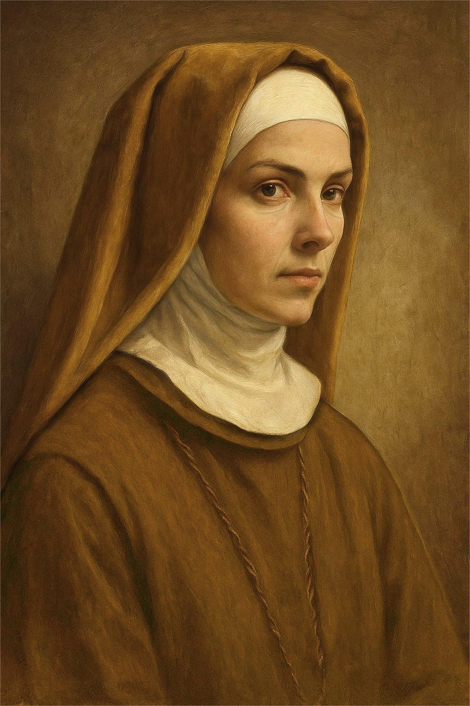

The old building creaked with age—its wooden beams moaning faintly under the weight of time.The Viscount's breath echoed in the room, heavy and uneven, like a hunted animal. Somewhere in the far corner, water dripped steadily from a rusted pipe. Tap. Tap. Tap. Every drop sounded like a ticking clock.
The Viscount gritted his teeth. “What game?”
“You have two choices,” Meteo said. “Option one—confess your crimes to those who still care about truth.”
The Viscount laughed bitterly. “And what? Be torn apart by scandal? You want justice?”
“No,” Meteo replied.
A beat of silence. Then:
“Option two… repeat what you did.”
“What the hell are you talking about?”
“To your left sits a woman, pregnant. To your right, a witness. You can choose to do to the pregnant one what you did to her… and then kill the witness. If you do that, you go free. I’ll give you the antidote.”
The Viscount’s throat tightened. “What antidote?”
“You’ve been poisoned. A small dose. Takes a few hours, unless treated. I have the medicine. Simple exchange: your confession… or your nature.”
“This is madness.”
Meteo leaned in—close enough that the Viscount could feel the breath on his cheek.
“I have no name left. No family. No reputation. I’ve already lost everything. So go ahead—call it madness. But it’s the only justice you’ll ever meet.”
Silence stretched. Then Meteo said quietly:
“You have ten seconds to choose.”
“One.”
The cries of the women filled the space again—no words, just agony.
“Two.”
The Viscount’s breath came fast and ragged.
“Three.”
He began to shake.
“Four…”
And still, the selfish voice inside him whispered: What does it matter? They’re nothing. No one. Peasants. Beggars. Forgotten in a week. No one will ever know.
The ropes cut into his wrists as he thrashed against the chair, sweat pouring down his brow.
“Second option!” Viscount shouted, breathless. “I choose the second one!”
The ropes around Viscount's wrists were finally loosened. His shoulders sagged with relief, though the cloth over his eyes remained tightly knotted. Blindness wrapped his thoughts in panic, but his hands were free now. That was enough.
He hissed through clenched teeth, “Why won’t you take this blindfold off?”
A pause. Meteo’s voice came calm and cold, just a few feet away.
“That’s rule number one.”
Viscount didn’t reply. He simply rubbed his wrists and listened. He could hear breathing—rapid, ragged. And the soft sobs of women. Two of them. Still alive.
“Where…?” He turned slightly, arms out, feeling the air like a creature in the dark.
“To your left,” Meteo said casually. “She’s tied. Pregnant. Just like your first.”
Viscount said nothing, only moved.
As he fumbled forward, his hand met warm skin—shaking, recoiling. A bound figure. He gripped her chin, ignoring the flinch, then her hair.
He reached up, roughly placing his palm over her mouth and eyes, covering them in the dark.
“Like before…” Meteo muttered. “I remember—you laughed while you did it.”
Viscount snarled. “Shut your mouth. I’m doing it.”
The woman struggled, her muffled cries vibrating against his hand. Her entire body writhed in desperation, but he pressed her down, tying the cloth back over her face with jerky hands. He looped the rope around her wrists, tight, practiced. The second woman screamed—no, tried to. Her cries came broken and wet, without words.
He slapped the first woman hard. “Stay quiet!” he snapped.
Meteo chuckled from his chair.
Meteo’s thoughts were a haze.
He wasn’t sure what he felt—if he felt anything at all. His eyes followed the scene before him as though it were nothing more than a stage play, a distant performance where he was no longer a participant, only an audience member.
A twisted show of justice—something even the gods themselves could never orchestrate.
“Ten steps ahead is the balcony,” he said. “The railing is low. The river below is deep.”
Viscount didn’t wait. He hauled the woman to her feet, dragging her like dead weight across the creaking wooden floor. She tried to resist—feet scraping, body slumping—but he yanked harder.
He was panting. Not from sorrow. From effort. From his own fear.
Last time, there had been three men helping him. This time it was only him. The difference was clear in the pain in his arms, the shaking in his legs. But he pushed forward—driven by one thing: himself.
The wind rushed cold and loud as he stepped through the open doorway. The balcony creaked beneath their weight. The air reeked of damp wood and distant river water.
Behind him, the second woman let out a gurgled moan, but her ruined tongue made it sound inhuman—like an animal begging.
He didn’t care.
His hands found the rail. He counted his breaths.
One…
Two…
With a grunt, he lifted her—barely—swaying under her weight.
And then he let go.
A heavy splash cut through the night. The sound echoed up from below. Then… silence.
Viscount stood still, the wind cold against his face, the blindfold clinging to his skin like a second shame.
He turned, slowly, and walked back inside, following the creak of the floor. Behind him, the river swallowed everything.
And Meteo was still there, waiting in the dark—watching.
Somewhere in the recesses of his mind, he knew this moment was supposed to mean peace, supposed to mean justice for his sister. Yet the realization stirred nothing. No relief. No satisfaction.
The first time had been different.
The first time, when he saw her die, the world had torn open—panic flooding his chest, anger scorching his veins, grief clawing at his lungs until every breath was a ragged gasp. Emotions had come in a storm then, so many and so sharp he could hardly name them.
But now… now his mind was fog.
The details around him blurred into meaningless fragments—the muted clatter of boots somewhere behind him, the faint crackle of a torch along the wall, the stale, cold smell of the chamber. He felt himself drift, untethered, as if the air between him and reality had thickened.
“Good job,” he said with a strange calm. “Now, to your right, there’s an axe. Finish your witness.”
Viscount froze.
His breath came in short, shallow bursts, and his face—already dripping with sweat—twisted into something inhuman. It was no longer the face of a nobleman or a man of power. It was the face of something cornered, driven by pure, panicked selfishness.
He turned slowly toward the direction of the voice. Though the blindfold still covered his eyes, he could feel the presence of the axe—cold metal hanging in the air, as if it were waiting for him.
The halls gleamed with polished marble and the gold trim of wealth that never knew consequence. A servant hurried through one of the many passageways, clutching a folder tightly in his hands.
Before he could reach the study, a guard stepped in his path. “What do you want?”
“I need to show this list of painters to the Viscount,” the servant said, slightly out of breath.
The guard glanced at the others. Something in the air shifted—uncertainty, suspicion.
Within seconds, one of the guards bolted inside.
Moments later, the alarm rang through the house:
The Viscount had been taken.
Noah heard the commotion from the entrance hall.
Without a word, Noah spun on his heel and stormed out, his long black coat sweeping behind him like a trailing shadow. Outside, Noah caught the servant by the sleeve.
“How did it happen?” he demanded.
The boy stammered, “He—he pretended to be one of us. A servant. Took the Viscount without anyone noticing.”
Noah narrowed his eyes. “He? What do you mean ‘he’? It was supposed to be a girl.”
The boy shook his head. “No, sir. It was a boy.”
The words hit Noah like a stone. “What?”
The streets outside were alive with chaos.
Boots struck against cobblestones in frantic rhythm, voices calling orders, the sharp clatter of weapons as men hurried past. Somewhere in that rush was Noah, moving with the others, searching for the Viscount.
John sat alone at the table.
He could hear it all—the scuffle of hurried feet, the bark of commands, the scrape of wheels over stone—but he forced himself to ignore it. His fingers rested against the rim of his untouched cup, tracing the curve without thought. He told himself he was here to serve justice. Told himself to stay calm.
But the truth gnawed at him.
He didn’t know Meteo’s plan. All he knew was Meteo was the killer. The moment John saw the painting of Meteo, he knew. And yet… knowing did not ease the weight in his chest.
His mind drifted to the Viscount.There had been so many times before when the man had walked free—slipping through the grasp of law and truth as though they were nothing more than thin smoke. No one dared touch him. He was a Viscount, wrapped in wealth, title, and influence like armor.
But this time… this time, John had a chance.
The question was whether that chance was born of fairness… or of something far darker. His thumb tapped against the table’s edge, the rhythm quickening as the voices outside swelled.
Somewhere in the distance, a door slammed.
John didn’t move.
All around them, servants and guards scattered, calling for search parties, fanning out across the estate and deeper into the city.
A sharp shout broke through the noise.
“I found the buggy!”
Noah turned sharply. “Where?”
The boy pointed down the lane. Without hesitation, Noah took off running, coat flaring behind him as boots pounded against the cobblestone.
He skidded to a stop at the mouth of an alley where an old building leaned like a drunk over the street. There, in the shadows, sat the Viscount’s ornate buggy—abandoned.
Noah’s breath caught in his throat.
“Surround the building!” he barked to the guards behind him.
“Search every floor. Don’t leave a single corner unchecked.”
One of the guards kicked open the ground floor door. The group poured inside, weapons drawn, eyes darting.
Dust clung to the air like a veil, and the place reeked of damp wood and mildew.
Then someone called out, “Here—look!”
Noah followed the voice and found one of the guards crouched beside a chair in the center of the room. Draped over its back was something unmistakable—rich burgundy velvet lined with gold buttons.
The Viscount’s coat.
Noah’s stomach dropped.
He straightened slowly, his face hardening.
“Fan out. Go higher. He’s still here… or what’s left of him is.”
Noah's voice rang through the entrance hall of the abandoned building.
“He must be here. Search every tier—top to bottom. Shout loud whether you find something or not, understood?”
A chorus of “Yes, sir!” followed, and the guards fanned out in disciplined urgency, weapons ready, boots thudding on the old wooden stairs as they spread to every floor.
Noah stood still for a moment, watching them go, his coat lightly shifting in the wind that crept through the broken windows. His brows furrowed.
He had been so sure. Every lead, every trace had pointed here. And yet—
Something was wrong. Something he missed.
Voices echoed from the floors above.
“One tier—clear!”
“Two tier—nothing!”
“Third—clear!”
The deeper they searched, the more Noah’s chest tightened. A bead of sweat traced a line down his temple. He swallowed hard.
Then—
“Fifth tier—I found something!”
Noah didn’t wait. He bolted up the stairs, taking them two at a time until he reached the fifth floor. A pair of guards stood just outside a dark room, frozen. When they stepped aside, Noah entered—and stopped cold.
The room smelled of iron and old wood. In the center, under the fractured light of a flickering lantern, hung paintings.
But not on canvas.
On skin.
Human skin.
Noah didn’t need to ask whose.
One glance told him—the flayed flesh belonged to William and Samuel.
He stepped closer, barely breathing. His eyes moved from one grotesque frame to the next.
The paintings were of that night—the night Emily died.
Each scene, horrifying in detail, told the story no words could:
Three men dragging a girl. A balcony. A struggle. The moment she was thrown.
Noah’s breath hitched in his throat.
The artwork was exact. Too exact.
The realization crushed down on him like cold stone.
He wasn’t sure what he felt anymore—rage, horror, sorrow, confusion. Maybe all of it. Maybe none.
Then a voice came from one of the guards nearby.
“Sir… not only the Viscount is missing.”
A pause.
“His family too.”
Noah blinked, as if pulled back into his body. “What?”
His gaze snapped back to the paintings. His mind raced.
The boy. The painter. Emily’s brother.
He wasn’t just killing them—he was recreating everything. Not just in images. But in method.
Noah clenched his jaw. “It’s not this building,” he muttered. “This is a decoy. A performance.”
He walked to the window. Below, the river wound through the city like a black vein under the pale dawn sky. Cold mist drifted above its surface.
Then, louder, to the guards nearby: “How many abandoned buildings near the river?”
The old building groaned softly beneath the weight of time and silence.
Moonlight spilled through the shattered windows, casting long silver beams across the dusty floor. The shadows moved like ghosts across the wooden planks—one large, looming above, axe raised; another, smaller, trembling below.
The blade came down with a sickening crack.
The woman beneath him writhed, her voice escaping only in strangled blurts of breath and garbled sound. Her tongue was gone. Her resistance—fading.
But Viscount didn’t stop.
Again the axe rose.
Again it fell.
And again.
He didn’t want to hear her cries—didn’t want to be reminded of his choice, or the twisted game he agreed to play. He only wanted silence. He only wanted out.
Across the room, Meteo sat on an old wooden chair, legs crossed casually, hands folded in his lap, watching as if the entire act were a performance in a cruel theater. His expression unreadable—calm, detached, void.
The scene ended.
The so-called justice was done.
And Meteo… Meteo had nothing left to feel.
As the final blow fell, Viscount stood there, panting heavily, the axe slick in his grip, the metallic scent of blood thick in the room.
He turned.
“Where’s my medicine?” he growled, stepping forward. “You said—give it to me.”
Meteo didn’t move.
“There was no poison,” he said simply. “Only your selfishness. That is your poison.”
Silence followed. Deafening silence.
Even the wind outside seemed to hold its breath.
Viscount stood there, stunned. Then, trembling fingers reached for the cloth still tied over his eyes. He tore it off—and blinked.
The chair was empty.
Meteo was gone.
Confused, panicked, he staggered forward, shouting the boy’s name—though he’d never been given one. His eyes scanned the room. No one.
Only the body on the floor.
The blood. The woman.
Something in his chest jolted—a throb, sharp and deep. He knew that face.
No… it couldn’t be.
He stepped closer, knees buckling as the details came into focus. His breath caught in his throat. His legs gave out. He collapsed beside her, reaching with shaking fingers.
The woman he had killed—
was his wife.
And in that moment of horrific clarity, everything else crashed in at once.
The screamless body thrown into the river.
The blurred shape he had dragged and discarded in desperation to survive.
That was his daughter.
A raw, strangled cry burst from him as he stumbled toward the balcony. The night was cold. The wind bit into his skin. He leaned over the railing, staring down into the black river below.
The moon stared back.
Behind him, the room was a graveyard.
And Viscount sank to the floor again—his limbs weak, his breath ragged.
Everything was wrong.
Everything.
Boots heavy with urgency, coat fluttering behind him, he burst through the door with two guards in tow.
His breath caught.
The first thing he saw was the woman’s body, pale and still in a pool of red. Nearby, the axe—dropped, forgotten. And then—
Viscount.
Collapsed. Shaking. Broken.
Not by blade or poison, but by the unbearable weight of truth.
Noah didn’t speak. He didn’t need to.
There was nothing left to say.
Only the wind whispered now, sweeping through the broken window as the moonlight faded, and the night remembered.
Noah had been right—at least, in part.
The criminal hadn’t taken Viscount’s life.
He had taken something worse.
He had shattered his mind.
In the dim, blood-dried room, Viscount sat hunched on the floor, his face hidden behind trembling hands, his eyes red and distant. A man’s broken breath echoed softly, barely audible beneath the heaviness of silence.
Then the silence broke.
“Where is she?”
The door slammed open.
“Where is she? She’s pregnant—where is my wife?!”
The man’s voice cracked like thunder across the hollow building. His boots slammed the ground with urgency, his eyes frantic, scanning every corner until they landed on the shivering wreck of a man on the floor.
Viscount didn’t answer.
Couldn’t.
He sat frozen, lips parted, unable to form a single word.
Noah turned slowly. His eyes met the man’s, and something passed between them—regret, sorrow, and a silent understanding far too bitter.
“Search the river,” Noah said quietly.
The man blinked. “What?”
Guards moved quickly. Lanterns flickered. The air shifted, and then—
“I found something!” a voice cried out.
The river gave her back, but not in time.
She floated lifeless in the water, moonlight glinting off her skin, dress soaked, hair fanned like weeds beneath the surface. Her husband waded in without hesitation, clothes dragging behind him. He lifted her from the water, arms trembling with grief, and fell to his knees on the shore, wailing.
He held her like she was still alive.
And cried like he had died with her.
Back inside, the sound of that grief—raw, unfiltered—echoed through the empty halls. It pierced the marble, the silence, the sin.
Viscount flinched. He covered his ears with shaking hands.
He couldn’t bear it.
He couldn’t hide from it.
Not anymore.
Compassion is the soul of humanity.
Without it, a person cannot be human—only a shape, only a mask.
To suffer punishment should not be the fate of the poor alone.
It must be shared, even by the powerful.
Otherwise, justice would never stand.
That truth had lived too long in silence.
Not anymore.
Noah mounted his horse with steady hands. The sky had begun to pale in the east. He gave the order to the guards.
“Every road. Every forest. Every path,” he said.
“Find him.”
The chase began.
It didn’t take long.
A shout broke out in the woods. “There! Over there!”
Meteo ran like a shadow across the clearing—faster than they expected. But Noah didn’t chase.
He didn’t need to.
He reached for his bow, notching an arrow. His fingers held calm.
One breath.
One aim.
Release.
The arrow flew like justice—and struck Meteo's leg.
He stumbled. Fell.
Alive.
That was the point.
Noah didn’t want him dead.
He wanted the world to hear the whole story.
The boy ran, limping through the trees, blood trailing from his wounded leg.
Branches clawed at his face. Breath tore from his lungs. Every step screamed through his muscles—but he didn’t stop.
Then—a collision.
He slammed into a figure in the dark.
A strong hand caught him before he could fall.
“Follow me,” said a voice low and sharp.
Goth.
The bounty hunter’s eyes glinted like iron under the moonlight.
Behind them, the shouts of guards broke through the trees, drawing closer—arrows notched, feet pounding, dogs howling in the distance.
Noah was among them.
He rode fast, cutting through the brush, his long coat snapping behind him. His eyes scanned the chaos—then narrowed.
There. Up ahead.
He caught sight of them.
The boy. The bounty hunter.
“Again...”
Noah drew his bow. A flash of movement. A deep breath. And—
Thwip.
The arrow soared through the air, fast and true.
But Goth spun and deflected it with a single flick of his blade. Sparks flew as steel kissed wood.
Noah cursed and notched another.
Thwip.
This time Goth didn’t block in time.
The arrow grazed his arm, slicing a clean line through flesh. Blood followed.
The guards let loose a volley—half a dozen arrows screamed toward them. One embedded into Goth’s thigh. Another sliced past his side.
He staggered.
And then he changed.
Within moments, he moved—not like a man, but like a shadow. Like violence made flesh.
Steel flashed.
Three minutes.
That’s all it took.
When Noah arrived, the forest floor was slick with blood. Five guards lay still, their bodies slumped over branches and roots, faces frozen mid-scream. Weapons scattered. Arrows snapped.
And there was no sign of Meteo.
No trace of the bounty hunter.
Just the silence of the woods.
And the weight of failure.
Noah slowly dismounted, breath misting in the cold. He walked among the bodies, eyes burning—not just from smoke or effort.
The train roared across the countryside like a metal beast.
Its wheels rattled on the tracks, echoing into the dark valleys of Varethorn. Inside one of its dim passenger cars, Goth sat opposite the boy—Meteo.
The oil lamp above them flickered.
Meteo’s eyes were fixed on the window, watching the blur of trees rush by under moonlight. His hair danced in the draft from a cracked window, strands flicking like restless thoughts.
“Where are you sending me?” Meteo asked without turning.
Goth leaned back, his arms crossed. “To a safe place.”
Meteo let out a faint breath, almost a laugh. “There is no safe place for me.”
“She was the only family I had. When parents died, she cared for me like her own child. She always bought me whatever I wanted—never once thinking of herself.
The day she left, it wasn’t for her. She went away to earn more money—for me. But nothing happened the way we had hoped.”
Something in his voice made Goth glance at him more closely. Something that didn’t belong.
Then he saw it.
The boy shifted, and the sleeve of his coat rode up—a black mark inked on his wrist.
A tattoo.
Goth’s eyes narrowed. His breath caught.
That mark—he knew it.
The same one he’d seen long ago. The same one etched into the skin of monsters who wore smiling faces. The same one he bore.
He stared, silent, unable to hear what Meteo was saying now—until the boy’s voice cut through.
“A nun gave it to us.”
Goth’s voice came rough, tight. “Where did you say you got that?”
Meteo looked at the ink like it belonged to someone else. His eyes were hollow.
“A nun. Wore yellow hooded cloak. She gave all of us the mark. Said it meant we’d been chosen by God.”
He chuckled, bitter and tired.
“She said with this, we’d have a new life. A new chance. A divine purpose.”
He looked at Goth. “Just another religious mobilization. Crazy nonsense.”
But Goth didn’t laugh.
He whispered, “It’s not nonsense.”
He felt it all begin to snap into place like bone cracking into socket. A plan. A design. He didn’t know how yet—but it was her.
His mind reeled back to the blurred fragments of childhood—a woman in yellow, her robes sweeping through mud and blood. A soft voice that dripped into the ears like honey but left rot behind.
{Those marked by the tattoo are chosen by God. Through it,god can hear our pray, we’re reborn—given a new life, a new path. He walks with us. Always.}
He remembered the screaming.
The blood.
The children turning on one another like wild dogs—until everything ended in smoke and ruin.
And yet… she let him live.
Why?
Why him?
Now, again, her mark surfaced. In high places—Henry. In the gutter—this boy.
What did she want? What was the end to this game?
Goth went to Velmora hoping to uncover something—about Henry, about the tattoo, anything at all. But the city gave him nothing. Only silence.
He turned, urgently. “Do you know where she came
But when he looked at Meteo—the seat was empty.
Just the whisper of cold wind. The window was wide open.
“No—”
Goth lunged toward it—
But too late.
Below, the shriek of metal on metal filled the night, and the boy’s body met the rails in a blossom of blood and bone.
He was gone.
No answers.
No leads.
Only a dark, growing weight in Goth’s chest.
He lowered his head, the mark on his wrist suddenly feeling colder, heavier.
She was still out there.
And now she had left another message—written in blood.
Morning sunlight crept through the high, dust-streaked windows of the Bureau.
The clock ticked dully above the filing shelves, and the air smelled of old paper and burnt coffee.
John sat alone in the main office, elbows resting on the polished wooden desk, the weight of too many unsolved nights etched into his features.
The door creaked open.
Noah stepped in, sharp in his uniform, a thin stack of folders in his hand. Without a word, he tossed one onto John's desk.
The folder landed with a thud.
“You know what happened last night?” Noah asked, voice low, almost disbelieving.
John said nothing.
Noah took a step forward, frustration rising. “Three people died, John. Not criminals. Faultless people. And the Viscount?” He motioned loosely. “He’s completely broken. Not mad. Not sane. Just… ruined.”
John looked up slowly, eyes tired.
“And that bounty hunter,” Noah continued. “How the hell was he involved?”
John rose from his chair. Quietly, he stepped around the desk and stood in front of Noah. His face was calm, but there was something boiling underneath—old regret, old fire.
“I asked him to help,” John said.
Noah’s eyes widened. “You did what?” “How did you know Meteo was the criminal?”
“I misunderstood the moment I first saw Meteo lying on Samuel’s bed. He looked so much like Emily—it was almost uncanny.
Then I went to his house. That’s when I saw the painting. The way he kept shading over the neck, again and again—it struck me. I’d seen that before. In the painting in William’s room. And again in Emily’s house.
That was when it stopped mattering to me whether he was a man or a woman.
He was the criminal.
My daughter paints, too. That’s how I noticed. That’s how I knew,” John said.
“You didn’t think this would end in blood anyway?” Noah snapped. “Why would you do that?”
“I didn’t know what the boy would do,” John said, voice even.
“But I knew what would happen if we let the system handle it. Nothing. Nothing would happen. He’d be buried quietly, and no one would remember Emily.”
Noah shook his head, disbelief tightening his features.
“That’s not justice,” he said coldly. “That’s revenge. And you wanted revenge on the Viscount too. That’s why you did it, isn’t it?”
John walked slowly across the room to the window, his steps heavy. He looked out at the waking town—so ordinary from here, so far from the rot beneath its cobbled streets.
“Maybe,” he said. “But sometimes you have to bend the law to keep it meaningful. That’s what you aristocrats don’t understand.” He turned back to Noah. “The Viscount didn’t need a blindfold. His own selfishness did that for him.”
Noah’s lips tightened. “So what now? You going to hide the truth? Protect the criminal forever?”
“I don’t need to,” John said quietly. “He’s dead. Jumped from the train. Goth sent word.”
Noah blinked. “That bounty hunter again,” he muttered. “You two getting close?”
John didn’t answer.
Noah gave him one last glance, then turned on his heel and left the room, the door slamming shut behind him.
John remained still, watching the light shift across the desk.
--------------------------------------------------------------------------------------------------------------------
The drunkard stumbled beneath the moonlight, weaving side to side. The world was silent except for the hush of long grass swaying in the night breeze. The sky hung heavy and black, save for the moon, which spilled silver across the tops of the tall grass, making the entire field shimmer like an ocean of pale blades. He dropped into the grass without grace, knees folding beneath him as if pulled by gravity and gin. From the inside pocket of his tattered coat, he fished out a half-empty bottle, uncorked it with his teeth, and took a long, sloppy pull. His breath was sour, his eyes half-lidded and unfocused.
Then, something shifted.
A sound. A soft thump. Not wind. Not bottle. Something else.
He blinked and stood, swaying. The bottle dangled from his fingers. In the thick of the grass, just ahead, something moved. Low to the ground. Weak. Shuddering.
He squinted. A figure. Small. Fur-covered. Breathing unevenly.
"A dog?" he slurred, stumbling closer. The creature lay limp, curled awkwardly in the brush.
But something was wrong.
Terribly wrong.
The closer he stepped, the more the shape twisted in his vision. Limbs like a dog’s... but the head—
The head—
The breath caught in his throat.
It had eyes. Human eyes. Too large. Too knowing. And a mouth, slack and softly parted — not a snout — but lips. Real lips. Dry and gray.
“No…” he murmured, staggering back, bottle slipping from his hand and cracking against a stone.
The creature didn’t move. It simply lay there. Watching. As if waiting.
A scream tore from his throat. He turned and ran blindly into the dark, grass slapping his face, legs barely working beneath him. But the image chased him — burned into the back of his mind.
The dog with a human head.
{CHAPTER - 5 END}
